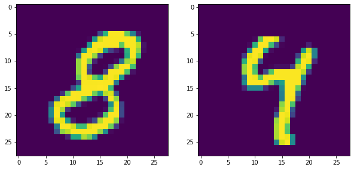

TensorFlow
This note shows how to use TensorFlow with MNIST Data Set .

We will briefly go through the installation and common elements of TensorFlow. Then we will start to input the MNIST data, and use Matplotlib to display some of our MNIST images. After that we start to construct our TensorFlow model with cross entropy error measure and gradient descent optimization. Finally we will compare our output y to test dataset to estimate our model performance.
Installation of TensorFlow for Winodws 10
As TensorFlow is not compatible with Windows 10, we need to install TensorFlow into a virtual environment. The following steps indicates how to do this with Anaconda.
Install Anaconda
Open ‘Anaconda Prompt’
Create a vitrual environment named ‘virtualEnv’ with anaconda:
conda create --name virtualEnv python=3.6 anaconda
After the packages are installed, we can use these commands to activate / deactivate the virtual environment:
conda activate virtualEnv
conda deactivateInstall Tensorflow in virtualEnv:
conda install tensorflow
Then we finised TensorFlow installation.
Test:
After TensorFlow installed, we can active the ‘virtualEnv’, and type the code below in to Jupyter Notebook:import tensorflow as tf
If no error / warning occurs, then it means we already installed TensorFlow correctly.
Reference: installation-of-tensorflow-in-windows-system
Import TensorFlow
import tensorflow as tf |
TensorFlow Elements
- Simple Constants
x = tf.constant(100) |
- Running Sessions
sess = tf.Session() |
100To line up multiple Tensorflow operations in a session:
with tf.Session() as sess: |
Tensor("pow_1:0", shape=(), dtype=int32)
Tensor("add_4:0", shape=(), dtype=int32)- Place Holder
When we don’t know the constants right now (for example, batch input need to update x and y for each iteration), we can declare place holder and use ‘feed_dict={x:x_batch, y:y_batch}‘later to fed in the data.
x = tf.placeholder(tf.int32) |
- Defining Operations
add = tf.add(x,y) |
Example of use placeholder with operation objects:
d = {x:20,y:30} |
Operations with Constants
Addition 50
Subtraction -10
Multiplication 600Get the MNIST Data
MNIST data
[!Office Website](http://yann.lecun.com/exdb/mnist/)
[!Chinese Data Source](https://scidm.nchc.org.tw/dataset/mnist)data sets: (datasize by ‘mnist.train.num_examples’)
mnist.train 55000
mnist.test 10000
mnist.validation 5000image and label:
X = mnist.train.images
y = mnist.train.labeltype(mnist):
tensorflow.contrib.learn.python.learn.datasets.base.Datasetsimport tensorflow as tf |
from tensorflow.examples.tutorials.mnist import input_data |
mnist = input_data.read_data_sets("MNIST_data/",one_hot=True) |
Extracting MNIST_data/train-images-idx3-ubyte.gz
Extracting MNIST_data/train-labels-idx1-ubyte.gz
Extracting MNIST_data/t10k-images-idx3-ubyte.gz
Extracting MNIST_data/t10k-labels-idx1-ubyte.gzVisualizing the Data
import matplotlib.pyplot as plt |
mnist.train.images[0].shape |
(784,)plt.figure(figsize=(10, 5)) |
<matplotlib.image.AxesImage at 0x236962d7c50>
plt.figure(figsize=(15, 7)) |
mnist.train.labels[5] |
array([0., 0., 0., 0., 0., 0., 0., 0., 1., 0.])mnist.train.labels[9] |
array([0., 0., 0., 0., 0., 0., 0., 0., 1., 0.])mnist.train.images[8].max() |
1.0plt.figure(figsize=(10, 5)) |
<matplotlib.image.AxesImage at 0x23699dd6f28>plt.figure(figsize=(12, 5)) |
<matplotlib.image.AxesImage at 0x23699317cc0>Create the Model
Variable Objects
tf.placeholder
tf.VariableMath Operation Objects
tf.matmul
tf.reduce_mean(array, axis)
return the mean value in each vector
tf.reduce_mean(array, axis)
return the max value in each vector
tf.argmax(input, axis(=0:row; =1:column))
if input=array, return the index of max value in each vector
if input=vector, return the index of max value in the vector
tf.equal(input, pred)
return True of False for each element comparsion. The dim. of return is same as input array's dim.
tf.nn.softmax_cross_entropy_with_logits_v2
tf.train.GradientDescentOptimizer
tf.train.GradientDescentOptimizer.minimize
tf.global_variables_initializerx = tf.placeholder(tf.float32,shape=[None,784]) |
# 10 because 0-9 possible numbers |
b = tf.Variable(tf.zeros([10])) |
# Output = Possibility |
Loss and Optimizer
y_true = tf.placeholder(tf.float32,[None,10]) |
# Cross Entropy |
Create Session
Everything except of variables (constants and placeholders) do not require initialization .
But Variable (even if it is a constant) should be initialized.
init = tf.global_variables_initializer() |
A Session object encapsulates the environment in which Operation objects are executed, and Tensor objects are evaluated.
Fitting and Evaluation
with tf.Session() as sess: |
[10.566967 10.0331335 6.0711703 ... 8.382192 7.064541 12.832104 ]
[7 2 1 ... 4 5 6]
0.9139Reference
https://www.udemy.com/python-for-data-science-and-machine-learning-bootcamp/
https://www.tensorflow.org/api_docs/python/tf/math/argmax)
https://stackoverflow.com/questions/34987509/tensorflow-max-of-a-tensor-along-an-axis